第一天：坐上晚上九点的火车。两家人，每家都是扶老携幼，庞大的十人家庭旅行团。本次旅行的指导思想：舒服、彻底的休闲。
第二天：早上6点多，抵达长春。顺利的联系上司机，在出站口接上我们。车是十四座的九龙商务，车况不错。在一家粥铺吃了顿丰盛的早餐，就开始上路了，直奔望天鹅而去。司机选的路线是从一道沟一直走到十五道沟，这样途中会穿过一段原始森林，还可以顺着鸭绿江走一百多公里，把中朝边境的风光欣赏个够。鸭绿江很窄，对岸的房屋、铁路、兵营甚至朝鲜人都看得十分清楚。路途很遥远，开到十五道沟的时候，天已经全黑了，在山里开夜路还是有点吓人的，心惊胆战的顺利到达，入住望天鹅会馆。这里据说是此地最好的宾馆，但是被褥好潮呀，热水器也完全不热，山里也许都是如此吧。
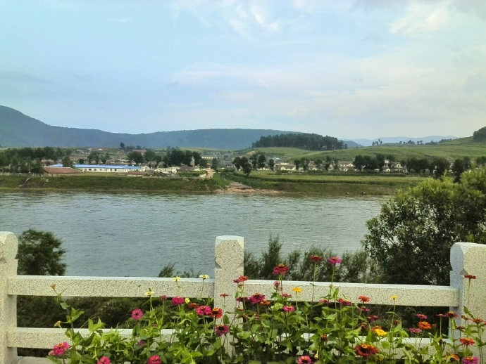
美丽的鸭绿江，江对面就是朝鲜，看得十分清楚
第三天：游览望天鹅。虽说长白山的名头远在望天鹅之上，但是在长白山景区反而是望天鹅给我们留下了最美好的印象。流水、飞瀑、奇石、翠林，景色秀美。下午经过长白县城开往二道白河，入住北坡附近的白山大酒店。晚上走出房间，一抬头，满天的繁星，那么亮，那么近，让人瞬间震撼到无语。都市生活多年以后，这样的星空似乎已经是儿时的记忆了。
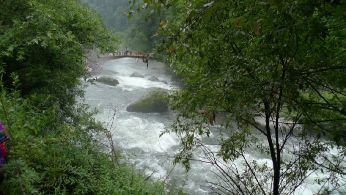
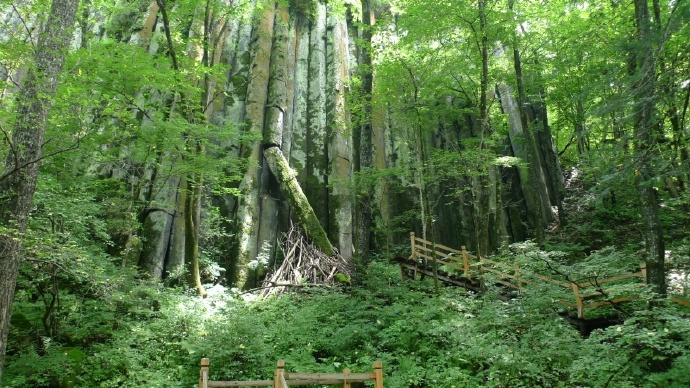
第四天：本次旅游的重头戏——长白山。提起来就全是泪啊。山顶大雾，不仅没有看到天池，还碰到了大雨，在风雨中冻得半死的人群全部涌向山顶的游客中心，又闷又挤，实在担心会出踩踏事故，只好顶着风雨哆哆嗦嗦的下山了。两个孩子冻得嘴唇发紫，在山下也无心游览，匆匆的告别了长白山赶往敦化。可怜我们那每个人近300的门票+车票呀。
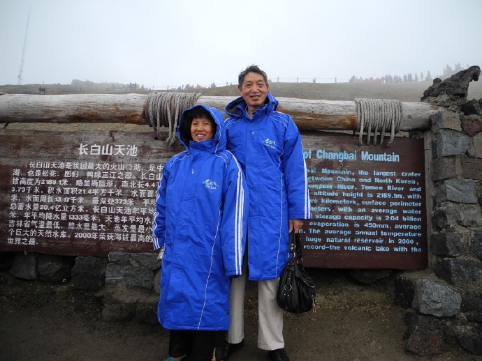
第五天：这一天安排比较轻松，游览镜泊湖。意外的是到了镜泊湖，发现这里有一个水上乐园，里面有n多水上大闯关的项目。两个孩子没带泳衣，干脆就上身穿救生衣，下身小裤衩，疯玩了一下午。这是这趟旅程她们玩得最high的地方。镜泊湖的瀑布也非常震撼，出乎意外的好看。老人们还观赏了创下吉尼斯世界纪录的瀑布跳水。
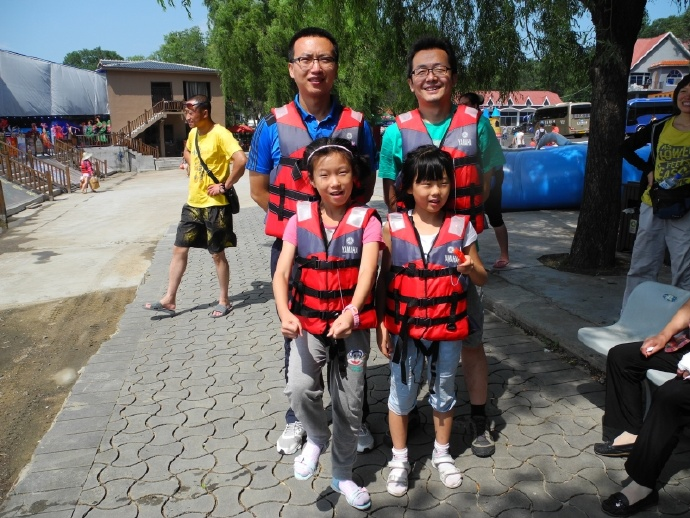
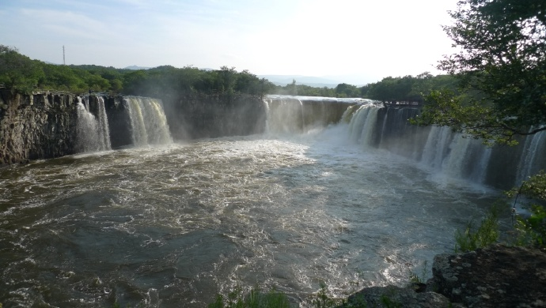
第六天：从敦化回长春，参观了长春的伪满皇宫。爸爸还见到了毕业后多年未见的大学同学。伪满皇宫内容还挺多，是一个抗日教育的基地，走马观花也转了一下午的时间。
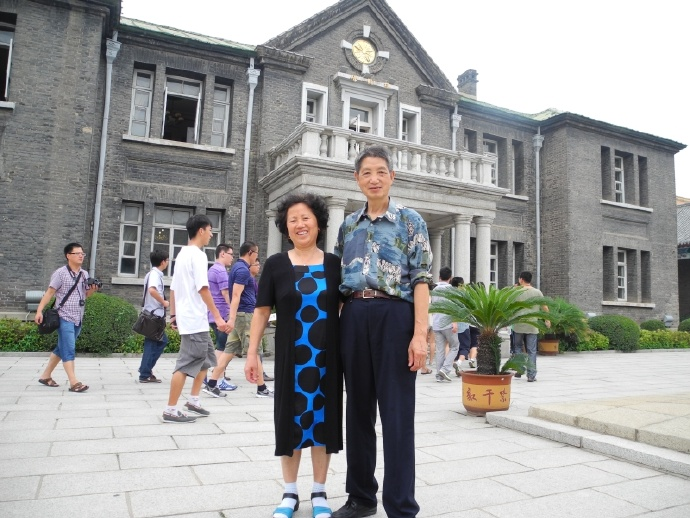
第七天：坐高铁到哈尔滨，下榻哈尔滨鑫城酒店。坐车到哈尔滨中央大街，品尝了有名的马迭尔雪糕，中午在波特曼西餐厅享用了美味的俄式西餐。下午游览中央大街、防洪纪念塔、松花江边玩水、圣索菲亚大教堂。历史悠久的中央大街给我们留下了美好的印象。
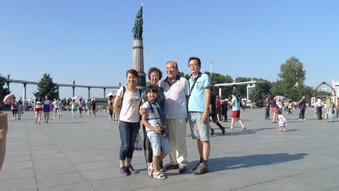
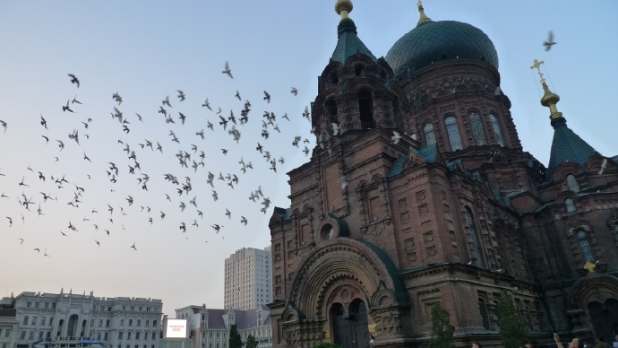
第八天： 美丽的太阳岛，孩子们的笨熊乐园
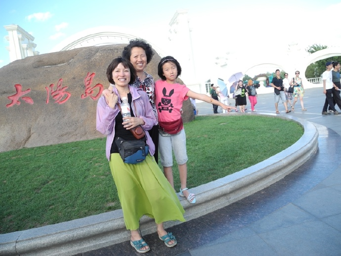
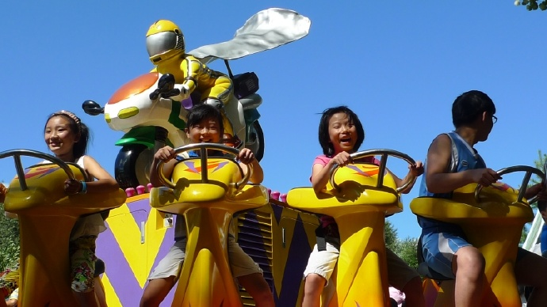
第九天：陪爸爸去怀旧，哈工大旧地重游。教学楼、宿舍居然还都在，只是物是人非。老爸感慨良多，每个人心中的青春都是永不会逝去的吧。下午游览东北虎园林，晚上坐高铁，告别了美丽的哈尔滨，回到北京。
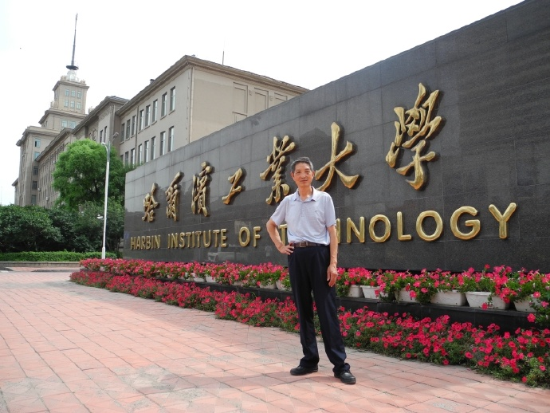
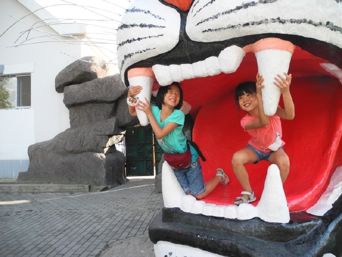